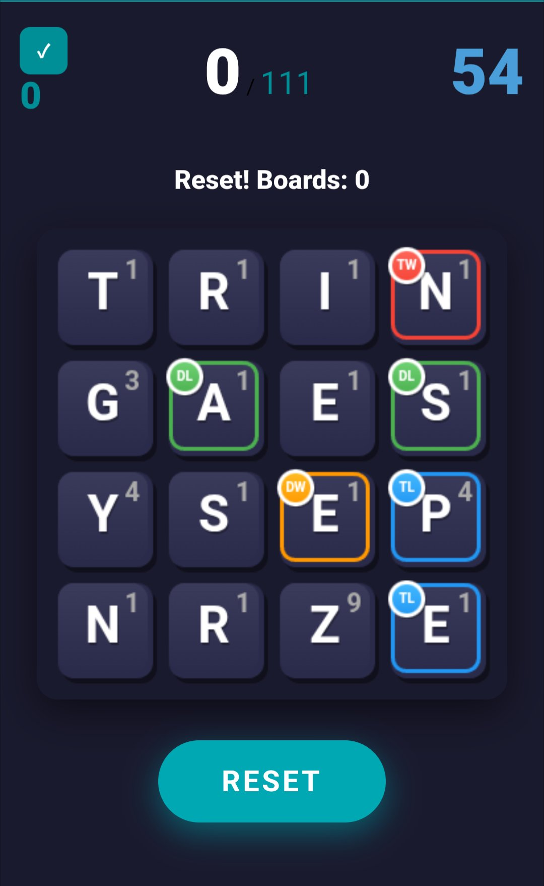
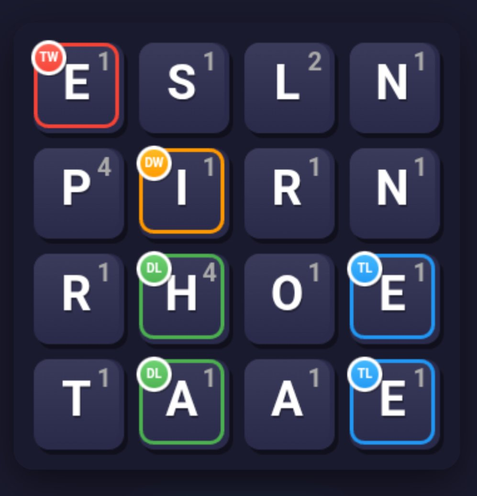
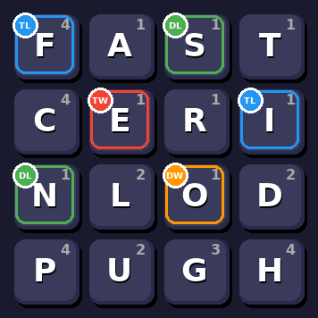
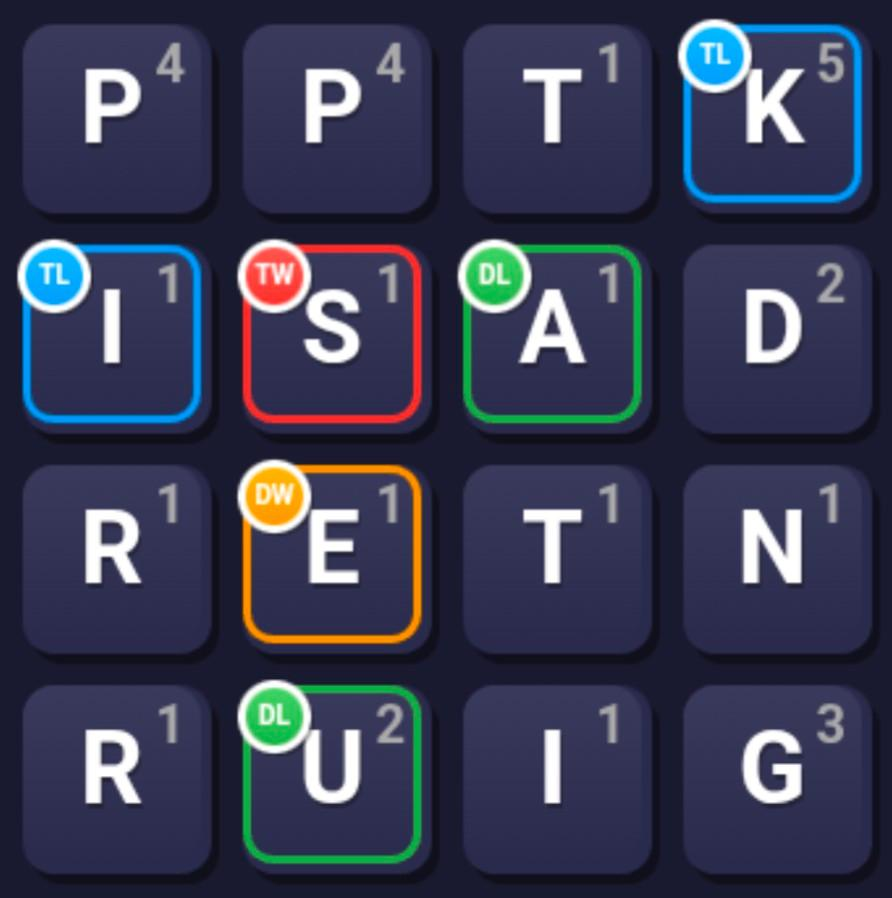
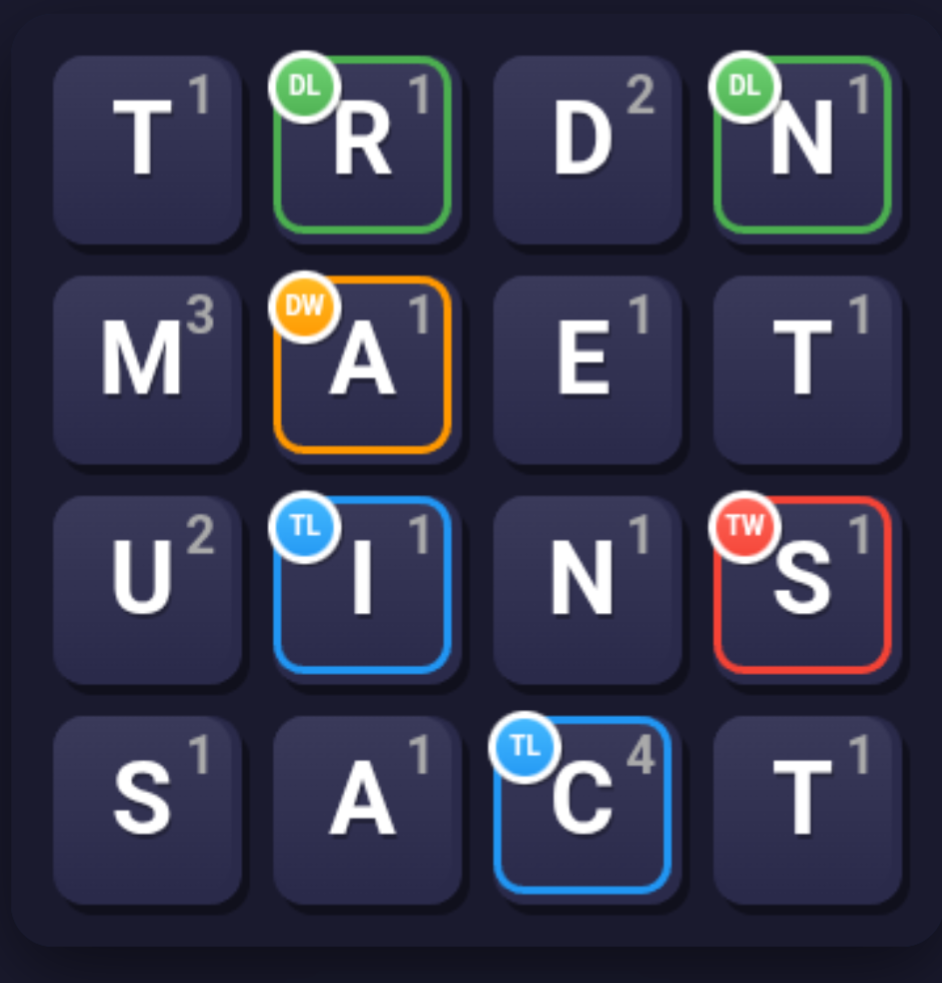
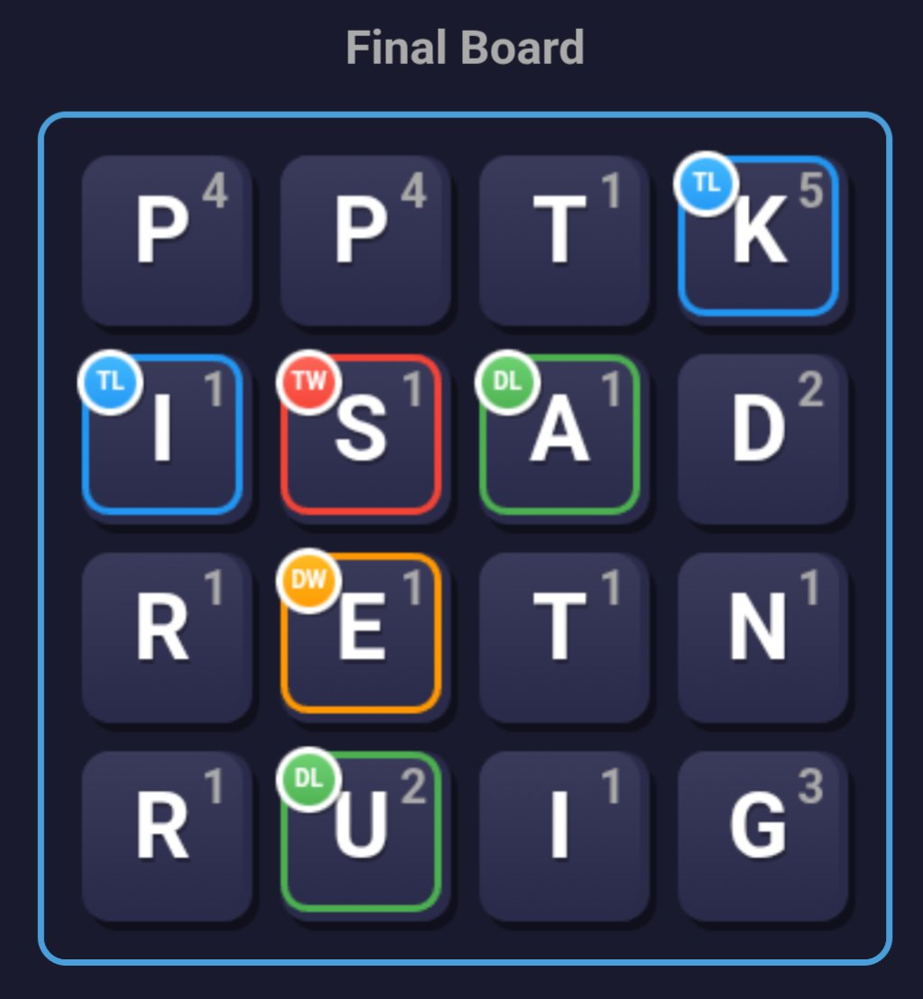
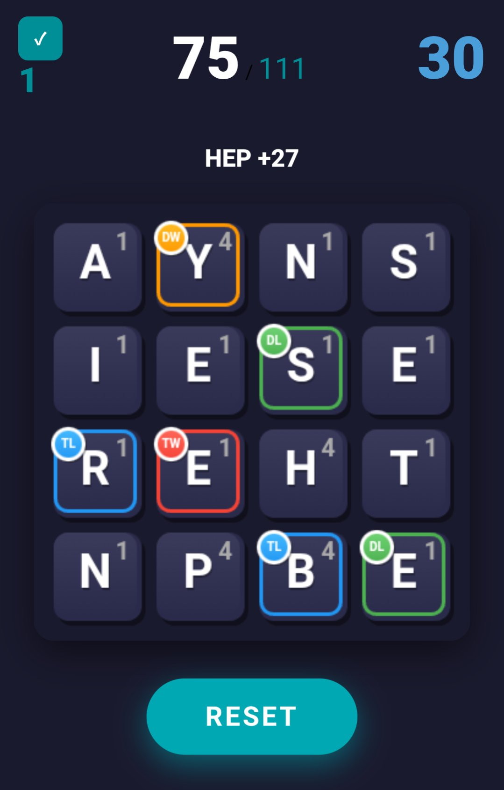
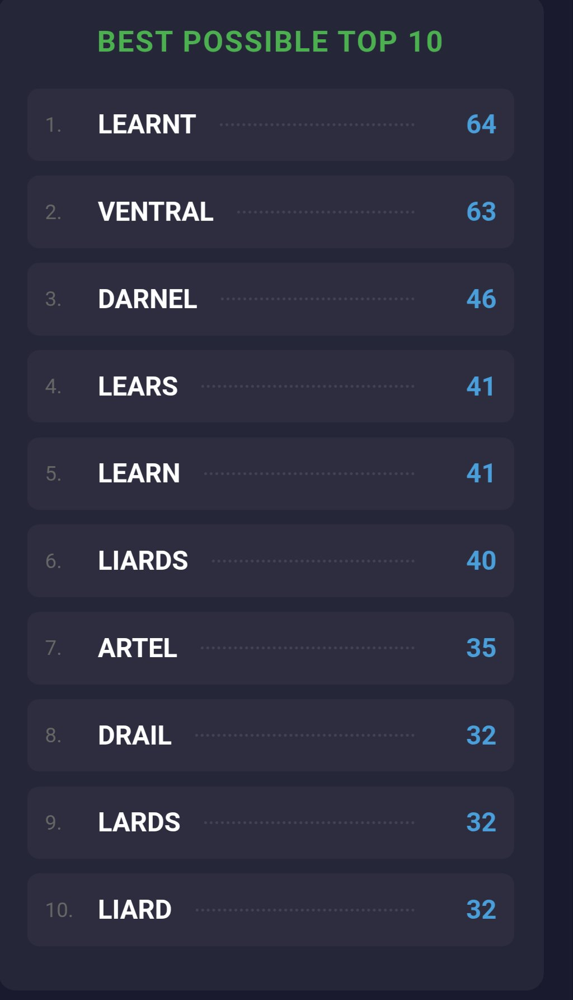

The initial instinct for many new players is to spell the first words they see. That is a logical way to start playing 111.
But after you become familiar with the basics, here are some strategy tips based on the results of tens of thousands of games played during 111's development. They will help you maximize the number of 111 boards you can build.
1. After you begin a game, immediately scan the board to see the letters that create double and triple value words and the letters with double and triple values, especially those worth 3 points or more. These letters are crucial to quickly reaching 111. On the board below, for example, your first focus should be on using N and P.

2. Spelling a word that has letters that create both double and triple value words gives you a 6-times multiplier that allows for a quick accumulation of points. For example, on the board below, if you spell PIES, it would be 42 points because of the E and I. Without the multipliers, it would be only 7 points.

3. Take advantage of triple values for 4-point letters -- C, F, H, P, Y -- and 5 point-letters -- K and Y. Words that combine triple value letters with letters that create double or triple value words are very valuable. For example, FACE is 9 points with plain letters. But if the F is a triple value letter (worth 12 points) and the E is a letter that creates triple value words -- as shown on the board image below tip 4 -- you would get 54 points -- (12 + 1 + 4 + 1) times 3.
4. Recognizing that you can quickly get the same score by using the same letters you have just used to create another word is very helpful. On the board below, you can also spell CAFE with those letters and thus get 54 points. If you start a game with FACE and CAFE, you are at 108 and on the brink of a solved board. A skilled player who sees this FACE and CAFE combo can use the split-second extra time this provides to look for a 3-point word to reach 111 while simultaneously typing in CAFE. These small time-saving tactics add up and also work with words of smaller point values.

5. If you spell a word with a good score that ends in ING or ED, you need to immediately realize that there are likely to be other words ending in ING or ED on the board for you to spell. For example, on the first board shown below, SEATING, PASTING, STATING and RESTATING can be quickly used. On the second board, SCANTED, SNARED, TRAINED, RAINED and MANED are all good scores. This is not worth looking for in your initial scan, covered in tip number 1. But pattern recognition of this sort is very valuable.


6. Be aware that word scores increase with length, complicating quick calculations. A word with 5 letters gets 5 extra points. A word with 6 letters gets 10 extra points. A word with 7 letters gets 15 extra points, and so on.
7. The fact that a word with 7 letters gets 15 extra points is the key to achieving the best possible single score of 111 when starting a board. As noted in tip number 2, spelling a word that has one letter with double word value and one letter with triple word value creates a 6-times multiplier. This means that if you spell a 7-letter word that totals 16 points, you score 111 points -- 6 times 16 plus the 15-point bonus for a 7-letter word. The board below has two examples: NAPPIES and SAPPIER.

8. Be cautious about busting and having to start over, which wastes your time and effort. This happens when your total score is more than 111 or you reach 110, which is a dead board since it is impossible to create a 1-point word. If you have built to 75 points or more, you've cleared the way to a completed 111. Unless your 60 seconds are almost up, when you are at 75 points or higher, looking for several quick small scores is often better than looking for higher scores that can lead to busts.

9. You are only here because you clicked the "See Best Results" button after playing a game, which shows your 10 best words and the 10 best words that could have been spelled. Checking this page should be a regular habit. It will help with the pattern recognition mentioned in tip number 5. The best possible words list will also show you unfamiliar words that will be helpful in future games.

Back to Results